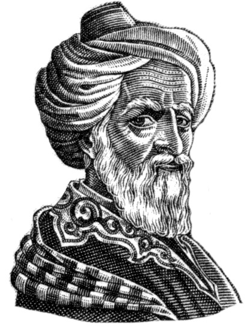

Présentation
Abu al-Qasim Khalaf ibn al-Abbas Al-Zahrawi, connu en Occident sous le nom d'Aboulcassis, était un chirurgien andalou du Xe siècle considéré comme le père de la chirurgie moderne.
| Nom complet | Abu al-Qasim Khalaf ibn al-Abbas Al-Zahrawi |
| Dates | 936 - 1013 |
| Lieu de naissance | Medina Azahara, Al-Andalus |
| Domaine | Chirurgie, Médecine |
| Innovation principale | Instruments chirurgicaux |
🎯 Inventions Notables
- Plus de 200 instruments chirurgicaux
- Techniques de suture avancées
- Premières descriptions détaillées d'opérations
- Invention du forceps obstétrical
- Développement de la dentisterie moderne
📚 Contributions Majeures
Son ouvrage Al-Tasrif (La Méthode) est une encyclopédie médicale de 30 volumes qui a servi de référence en Europe pendant plus de 500 ans.
🛠️ Instruments
Création d'outils chirurgicaux encore utilisés aujourd'hui
📖 Enseignement
Formation de générations de chirurgiens à travers son œuvre
🏥 Pratique
Développement de techniques opératoires révolutionnaires